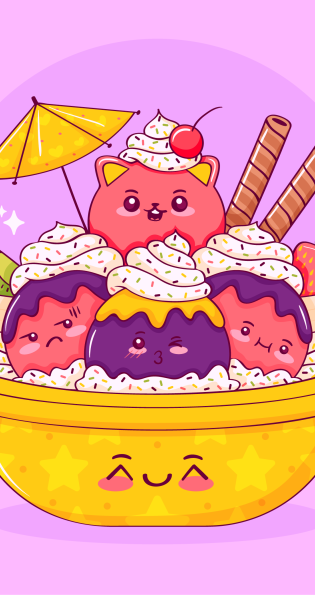
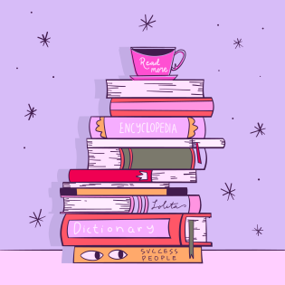
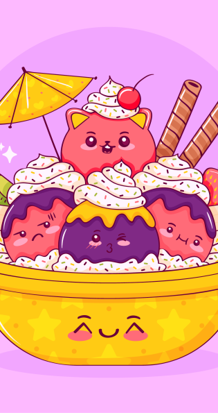
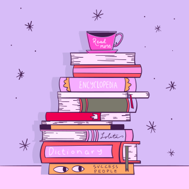

Почему сосредоточиться так сложно
Многозадачность
Особенно сложно сосредоточиться, когда задач много и все они — важные. Где же легендарная многозадачность, когда она так нужна вам (и всем нанимающим менеджерам этого мира)? А дело в том, что её просто не существует. Исследователи выяснили, что мозгу тяжело концентрироваться даже на двух делах одновременно. А когда в поле внимания попадает несколько важных задач, организм паникует и выделяет кортизол и адреналин — «гормоны стресса». Из-за этого мы работаем невнимательно: ошибаемся и быстро устаём. выяснилиДофамин
С гормонами стресса всё понятно, но дальше — ещё интереснее. В нашей невозможности сосредоточиться замешана и полная противоположность стрессу — дофамин. Это вещество участвует в системе вознаграждения мозга. Причём тут он? Мы часто отвлекаемся от важной задачи на что-то более «приятное» для мозгов. Например, смотрим лайки в соцсетях. В это время и выделяется дофамин — и мы чувствуем удовольствие. Получается замкнутый круг: чем больше отвлекаешься, тем больше удовольствия получаешь.Что снижает концентрацию
внимания?
Многозадачность
Как концентрация может снижаться из-за… концентрации? Любая стрессовая ситуация (и резко меняющийся мир в целом) заставляет наш мозг постоянно «сканировать» окружающую среду на предмет опасности. Например, читать новости вместо работы. Но быть собранными всё время — невозможно. Концентрация — мышца, и она может не выдержать, если не давать ей отдохнуть.Еда
«Быстрые углеводы» — сахар, белый хлеб, сладости — молниеносно доставляют в мозг энергию и помогают ему лучше работать. Но уходит эта энергия также быстро, как и приходит. А мы в результате попадаем на «углеводные качели»: как только действие «быстрых углеводов» заканчивается, мы чувствуем усталость и сонливость. И хотим ещё больше быстрых углеводов.Гаджеты
Да-да, это та самая ситуация, когда на экране ноутбука — код, в наушниках — подкаст, а на компьютере фоном — ещё и видео с забавными утятами. В результате мозг пытается переключиться с одной задачи на другую — и просто не может. А чтобы вернуться к состоянию полной концентрации, человеку в среднем нужно 20 минут. Вот и получается, что чем больше времени мы проводим в гаджетах, тем больше времени затем нужно, чтобы вернуться к работе.Как концентрироваться лучше, чем золотая рыбка (то есть дольше трёх секунд)
5 простых (на самом деле не очень) советов
Представьте небо и облака
Или листья в ручье. Тут дело в лёгкой медитации, которая помогает успокоиться. Ведь часто именно тревожные мысли о сложных задачах как раз и мешают эти сложные задачи делать. В такие моменты можно закрыть глаза и представить, что чистое небо — это вы, а облака — тревожные мысли. И сколько бы их ни было — ясное небо всегда будет где-то там, за тучами, и никуда не денется. Это упражнение поможет вернуться в настоящий момент, а не волноваться о потенциальных проблемах из будущего.Включите музыку
Но не любую, и не любимую. Любимая может быть связана с сильными положительными эмоциями, которые тоже очень сильно отвлекают. Подойдёт тихая, спокойная, умеренно-ритмичная. Можно вообще попробовать включить плейлист в «белым шумом» или нейромузыкой.Прогуляйтесь
Или даже пробегитесь. Лучше найти парк или лес: один эксперимент показал, что созерцание природы повышает концентрацию, в то время как после просмотра городских пейзажей она наоборот понижается. Можно совместить прогулку с физическими упражнениями или бегом — так в мозг поступит ещё больше кислорода и он будет лучше работать. Но и простая двадцатиминутная прогулка — тоже отличный вариант.Хорошо ешьте
Мы — не ваша бабушка, но это правда важно. Выбирайте продукты, которые препятствуют резким скачкам сахара в крови. Например, с высоким содержанием клетчатки: овощи, ягоды, бобовые (нут, чечевица, фасоль), коричневый рис, хлеб из цельнозерновой пшеницы.Читайте
Настоящие бумажные книги. Это правда помогает с концентрацией: чтобы прочитать пост в соцсети, достаточно нескольких минут или даже секунд. А вот интересная книга способна затянуть и на несколько часов и круто тренирует направленное внимание.А можно в картинках?
 


